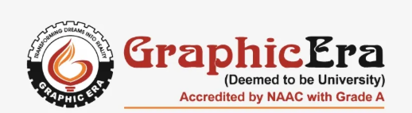

DEPARTMENT OF COMPUTER SCIENCE & ENGINEERING (CSE)

The Department of Computer Science and Engineering focuses on building strong foundations in computing, problem-solving, and software development.
The department prepares students to meet industry and research demands through a balanced curriculum of theory and practical exposure.
Department Facilities
- Advanced Computer Labratories
- Smart classrooms
- Project Development Labs
- Department Library
- Research & Innovation Support
- Software tools & Licensed Resource
Semester-wise Subjects
- Semester 1
- Electronics
- Physics
- C Programming
- Elective
- Professional Communication
- Semester 2
- Electrical
- Chemistry
- C++ Programming
- Advanced Communication
Course details
- C Programming
- C Programming is a foundational programming language used to develop system software and applications.
It helps students understand core concepts such as data types, control structures, functions, and memory management.
- Professional Communication
- Professional Communication develops effective speaking, writing, and presentation skills required in the workplace.
It helps students improve confidence, teamwork, and professional interaction in corporate environments.
Subjects with units
- C Programming
- UNIT 1: Introduction to C language
- UNIT 2: Data types and opeartors
- UNIT 3: Functions and arrays
- UNIT 4: Pointers and Structures
- UNIT 5: Strings
- C++ Programming
- UNIT 1: Introduction to C++
- UNIT 2: Object-Oriented Concepts
- UNIT 3: Inheritance and Polymorphism
- UNIT 4: Templates and Exception Handling
- UNIT 5: File Hanlding and STL
Download Syllabus